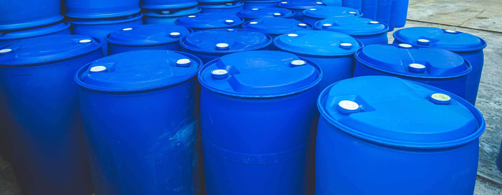
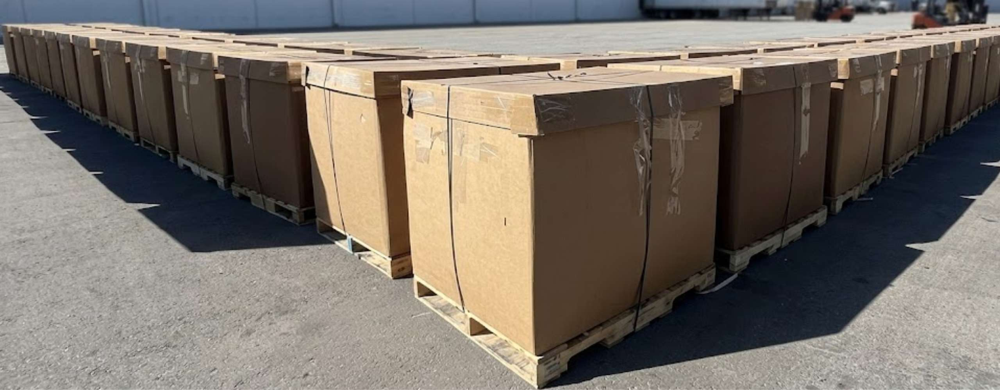

55-Gallon & Specialized
Available in steel, poly, or fiber for liquids and solids. We also accommodate smaller overpack drums and salvage drums for leaking containers.

Cubic Yard Boxes
The industry standard for bulk dry materials, contaminated PPE, and debris. These "Tri-Wall" boxes are sturdy and easily stackable.
IBC Totes (275/330 Gal)
Intermediate Bulk Containers (IBC) are ideal for large volumes of liquid waste, providing a more efficient footprint than multiple drums.